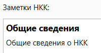
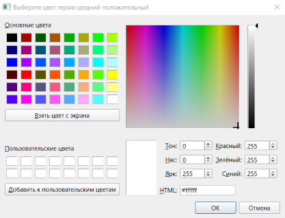
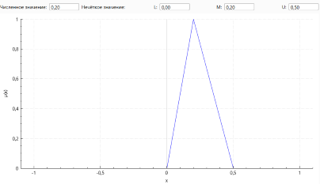

1. Настройка основных параметров модели осуществляется на вкладке настройки модели. Данная вкладка открывается при запуске программы. Для перехода на эту вкладку с другой вкладки необходимо нажать на заголовок «Настройка модели».
2. Для того, чтобы задать название модели, необходимо ввести его в поле «Название НКК».
3. Для того, чтобы задать заметки модели в формате Markdown необходимо осуществлять работу с полем, имеющим заголовок «Заметки НКК»:
3.1. При вводе текста в поле он отображается в текстовом формате (без отображения элементов Markdown):
3.2. В случае, если поле ввода заметок неактивно, то текст отображается в формате Markdown:
3.3. Для перехода в режим редактирования заметок необходимо нажать на поле заметок.

3.4. Для перехода в режим просмотра заметок необходимо нажать в любое место на экране (в том числе вне программы) не относящееся к полю заметок или использовать комбинацию клавиш «Ctrl + Enter».
4. Для добавления терма факторов необходимо нажать на элемент «Термы факторов» списка «Термы». После этого станет активна кнопка «Добавить». После нажатия на эту кнопку будет добавлен новый терм с именем по умолчанию «Новый терм». Все параметры значений терма будут равны 0.
5. В случае, если в текущий момент выбран терм факторов (находящийся в соответствующем элементе списка), то нажатие на кнопку «Добавить» приведёт к созданию ещё одного терма факторов.
6. Добавление термов связей выполняется аналогично с использованием элемента «Термы весов» списка термов.
7. В случае, если выбрана опция «Автоматическая конфигурация цвета», цвета терма конфигурируются в соответствии с заданными числовым и нечётким значениями терма. В случае, если данная опция не выбрана, начальные цвета конфигурируются в соответствии со значениями терма по умолчанию и впоследствии автоматически не изменяются. Ручное изменение цветов термов доступно при помощи палитры, открываемой при помощи кнопки «Цвет». Цвет данной кнопки отображает текущий цвет терма.

8. Числовое значение терма задаётся в поле «Числовое значение». Треугольное нечёткое значение терма задаётся при помощи полей «L», «M» и «U». Функция принадлежности нечёткого значения отображается на графике. Все поля значений термов факторов должны лежать от 0 до 1, а термов связей – от -1 до 1.

9. Для того, чтобы написать некоторые комментарии, касающиеся терма, необходимо воспользоваться полем «Заметки терма» в нижней части окна. Данное поле работает аналогично полю заметок модели (пункт 3 данного раздела).
10. Для переименования терма необходимо дважды нажать на его название в списке термов и ввести новое название.
11. Для удаления текущего терма необходимо нажать на кнопку «Удалить».